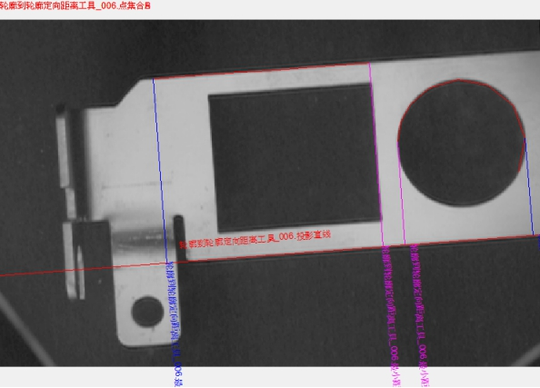
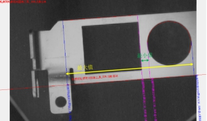
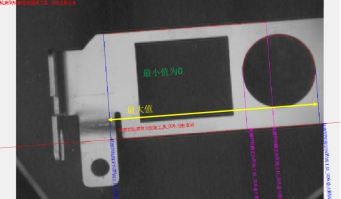
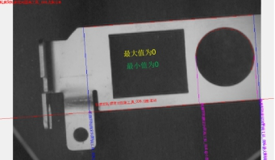
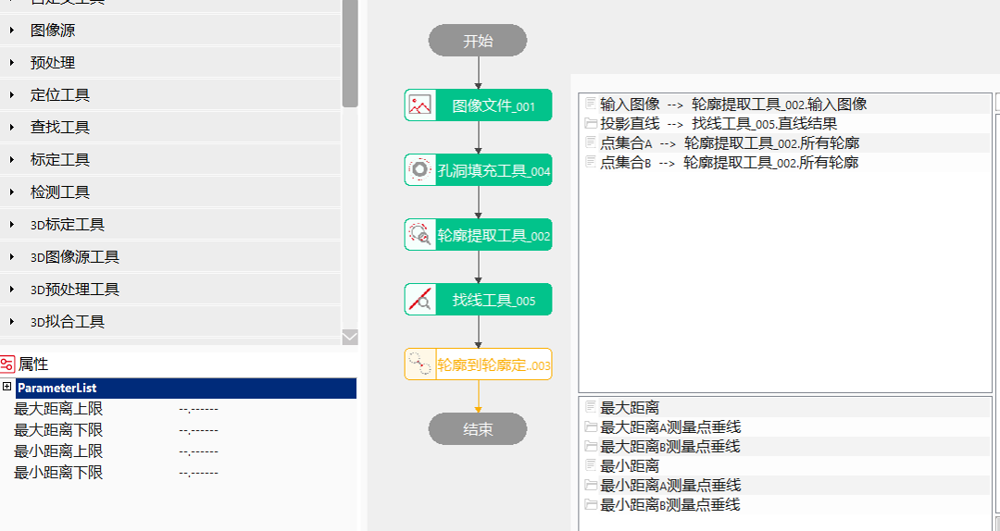
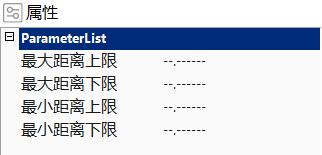
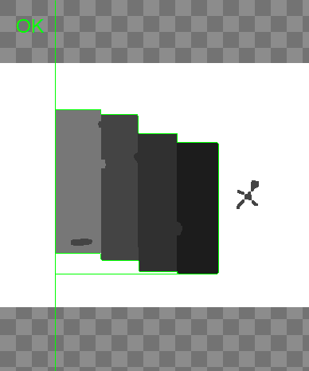
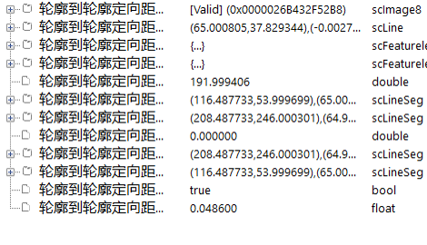

用于计算轮廓到轮廓之间的距离，主要是与轮廓提取工具一起使用。

常用于检测不规则目标物间的距离是否符合要求。
距离计算方法
距离值计算不是点集合A和点集合B的距离测量，而是将点集合A和点集合B中所有点投影到投影直线上，点集合A和点集合B对应投影点的距离测量。
点集合A与点集合B在投影直线上的位置关系分为3种：点集合A、B相互分离，无重叠；点集合A、B相互重叠；点集合A（B）包含于点集合B（A），如图3所示。

对于图2(a)所示情况，正常计算距离的最大最小值；对于2(b)所示情况，正常计算最大值，规定最小值为0；对于2©所示情况，规定最大值、最小值均为0；


最大距离上限、最大距离下限
对于输出参数最大距离的有效范围进行设定，可取值范围为[0, 999999.999999]，另可设置为"–.——“,表示对最大距离上限或下限不进行限定。
使用距离值上限或/和距离值下限对最大距离数值的有效范围进行设定后，执行此测量工具。
当输出结果最大距离在设定的有效范围内时，显示工具执行结果成功；否则，显示工具执行结果失败。
最小距离上限、最小距离下限
针对最小距离有效范围限定。
其他与最大距离上/下限设置方法相同。


| 现象描述 |
|---|
| 距离值计算不是点集合A和点集合B的距离测量，而是投影到投影直线上，点集合A和点集合B对应投影点的距离测量。 |
| 参数名称 | 参数说明 |
|---|---|
| 输入图像 | 需要测量轮廓与轮廓定向距离的图像。 |
| 投影直线 | 可以设置计算距离的投影直线。 |
| 点集合A | 特征点集合，通过轮廓提取工具获取。 |
| 点集合B | 特征点集合，通过轮廓提取工具获取。 |
| 最大距离上限 | 取值范围[0,999999.999999]，输出参数最大距离的上限阈值。 |
| 最大距离下限 | 取值范围[0,999999.999999]，输出参数最大距离的下限阈值。 |
| 最小距离上限 | 取值范围[0,999999.999999]，输出参数最小距离的上限阈值。 |
| 最小距离下限 | 取值范围[0,999999.999999]，输出参数最小距离的下限阈值。 |
| 距离值固定补偿 | 测量结果固定补偿。一般为0，用于补偿成像等系统误差。 |
| 距离值系数补偿 | 测量结果系数补偿。一般为1，用于补偿成像等系统误差。 |
| 高级界面 | 无 |
| 参数名称 | 参数说明 |
|---|---|
| 输入图像 | 需要测量轮廓与轮廓定向距离的图像。 |
| 投影直线 | 可以设置计算距离的投影直线。 |
| 点集合A | 特征点集合，通过轮廓提取工具获取。 |
| 点集合B | 特征点集合，通过轮廓提取工具获取。 |
| 最大距离 | 点集合到投影直线之间的最大距离。 |
| 最大距离A测量点垂线 | 点集合A到投影直线最大距离的点垂线。 |
| 最大距离B测量点垂线 | 点集合B到投影直线最大距离的点垂线。 |
| 最小距离 | 点集合到投影直线之间的最小距离。 |
| 最小距离A测量点垂线 | 点集合A到投影直线最小距离的点垂线。 |
| 最小距离B测量点垂线 | 点集合B到投影直线最小距离的点垂线。 |
| 执行结果 | 工具执行结果，执行成功显示“OK”，执行失败显示“NG”，同监视窗口的执行结果参数。 |
| 执行时间 | 工具执行时间。 |
参见“\Samples\轮廓到轮廓定向距离工具.gvp”。